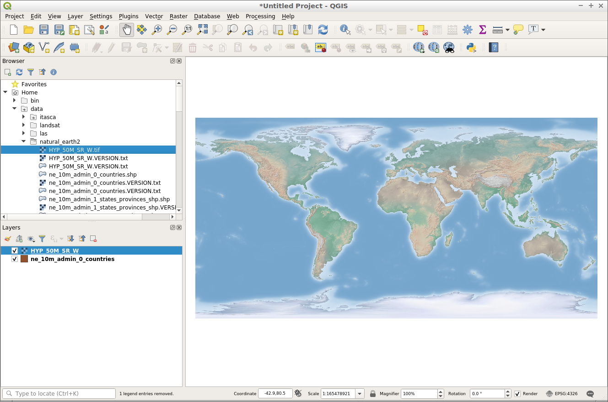
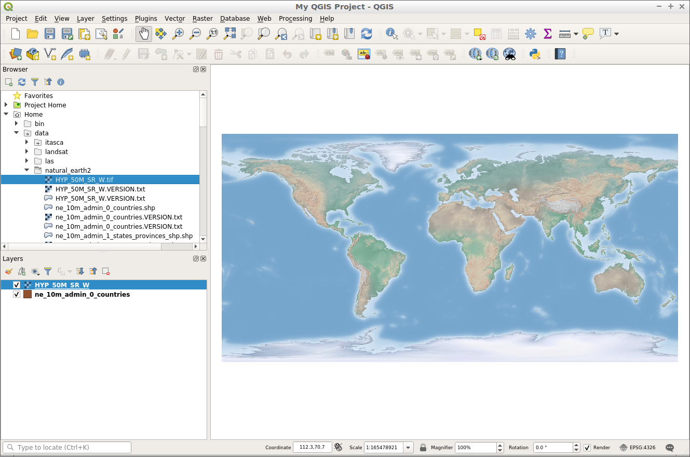
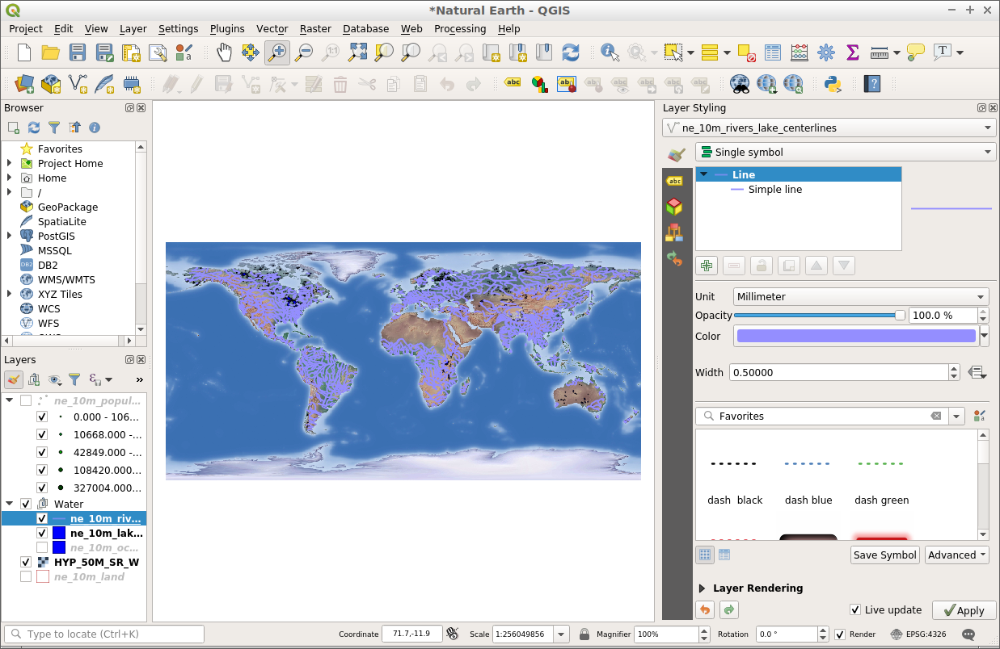

QGIS Quickstart¶
QGIS ist ein benutzerfreundlicher Desktop GIS-Client, mit dem Sie Daten visualisieren, verwalten, bearbeiten, analysieren und druckbare Karten erstellen können.
QGIS starten¶
Öffnen Sie den Ordner „Desktop GIS“.
Klicken Sie doppelt Sie auf das „QGIS“-Symbol.
QGIS startet mit einem leeren Projekt. Die verschiedenen Bereiche der QGIS-Anwendung werden unten aufgeführt.

[1] Menüleiste: Zugriff auf verschiedene QGIS-Funktionen über ein hierarchisches Standardmenü.
[2] Werkzeugleisten: Für die Interaktion mit der Karte, Layern, Attributen und Selektionen.
[3] Browser-Panel: Ein räumlicher Dateibrowser, der es ermöglicht über Drag-and-Drop Inhalte in den Karten zu überführen.
[4] Layer-Panel: Steuert die Karten-Layer (Themen), deren Reihenfolge und Sichtbarkeit.
[5] Statusleiste: Allgemeine Informationen zur Karte und Zugriff auf eine universelle Suchleiste.
Erstellen eines Projekts¶
Um ein neues Projekt zu erstellen, wählen Sie .

Beginnen wir mit dem Hinzufügen eines Vektor-Layers zur Karte. Layer können in QGIS über das Browser-Bedienfeld auf der linken Seite des Bildschirms hinzugefügt werden.
Wechseln Sie in das Browser-Bedienfeld auf der linken Seite des Bildschirms.
Navigieren Sie zum Ordner ‚home/data/natural_earth2‘.
Wählen Sie ‚ne_10m_admin_0_countries.shp‘.
Ziehen Sie den Layer aus dem Browserfenster, und lassen ihn im Kartenrahmen fallen.

Sobald der Layer auf den Kartenrahmen gezogen wurde, wird ein Layer angezeigt, der Länder anzeigt.

Versuchen wir nun, dem Projekt einen Raster-Layer hinzuzufügen.
Wechseln Sie in das Browser-Bedienfeld auf der linken Seite des Bildschirms.
Navigieren Sie zum Ordner ‚home/data/natural_earth2‘.
Wählen Sie ‚HYP_50M_SR_W.tif‘.
Ziehen Sie den Layer aus dem Browserfenster, und lassen ihn im Kartenrahmen fallen.

Sobald der Layer auf den Kartenrahmen gezogen wurde, wird ein Raster-Layer mit Bodenbedeckung und Bathymetrie angezeigt.
{kind=link}
Nachdem wir nun einige Inhalte zu unserem Projekt hinzugefügt haben, können wir das Projekt speichern, damit wir zu einem späteren Zeitpunkt darauf zurückkommen können.
Wählen Sie .

Speichern Sie das Projekt unter ‚/home/user/desktop‘.
Nennen Sie das Projekt ‚Mein QGIS-Projekt‘.

Klicken Sie auf „Speichern“.
Auf dem Desktop befindet sich nun eine Projektdatei mit dem Namen „Mein QGIS-Projekt“ und im oberen Teil ihres Projektes wird nun nicht mehr „untitled“ angezeigt, sondern „Mein QGIS-Projekt“.
{kind=link}
Öffnen eines vorhandenen Projekts¶
Ein QGIS-Projekt speichert Layer, Stile, Kartenausdehnungen und Einstellungen für die Verwendung zu einem späteren Zeitpunkt. Diese Informationen werden als QGIS-Projektdatei gespeichert und haben eine Erweiterung von ‚.qgs‘ oder ‚.qgz‘, wobei ‚.qgz‘ das Standarddateiformat in QGIS ist, das in die Zukunft geht.
Öffnen wir ein bestehendes QGIS-Projekt und werfen einen Blick darauf.
Öffnen Sie QGIS. Beachten Sie, dass Ihnen beim Öffnen von QGIS eine Liste der letzten Projekte zur Auswahl angezeigt wird. Dies ist eine bequeme Möglichkeit, ein Projekt zu öffnen, das Sie vor kurzem verwendet haben.
Wählen Sie .
Navigieren Sie zu ‚/home/user/qgis-example‘.
Wählen Sie das Projekt ‚QGIS-NaturalEarth-Example.qgs‘.
Klicken Sie auf ‚Öffnen‘.

Dadurch wird ein QGIS-Projekt mit einer Reihe von Natural Earth-Datensätzen geöffnet, wie unten gezeigt. Dieses Projekt enthält eine Reihe von Layern im Ebenenbedienfeld und zeigt den räumlichen Inhalt im Kartenrahmen an.

Layer können aktiviert oder deaktiviert werden, indem Sie im Ebenenbedienfeld auf das Kontrollkästchen neben dem Layernamen klicken. Wenn ein Layer im Layer-Bedienfeld aktiviert ist, wird der Kartenrahmen aktualisiert, um den Layer anzuzeigen. Eine Detailansicht des Ebenenbereichs ist unten dargestellt.

Testen wir das Layer-Bedienfeld und ändern die Sichtbarkeit einiger Karten-Layer.
Klicken Sie auf das Kontrollkästchen neben dem Layer ‚ne_10m_populated_places‘, um es zu aktivieren.
Klicken Sie auf das Kontrollkästchen neben der Ebene „Wasser“, um die Ebene auszuschalten.
Beachten Sie, wie der Kartenrahmen aktualisiert wurde, um die Änderungen in der Layer-Liste widerzuspiegeln. Wir können jetzt den Layer ‚ne_10m_populated_places‘ als Punkte sehen, aber nicht mehr die Flüsse und Seen, die Teil des ‚Waters‘-Layers sind.

Neben der Steuerung der Layer-Sichtbarkeit können wir auch die Reihenfolge ändern, in der Layer im Layer-Panel gezeichnet werden. Dies geschieht, indem Sie eine Ebene im Ebenenbereich auswählen und in der Liste nach oben oder unten ziehen. Die Reihenfolge, in der die Layer in der Layer-Liste angezeigt werden, ist die Reihenfolge, auf die sie im Kartenrahmen zeichnen.
Linksklick auf den Layer ‚HYP_50M_SR_W‘.
Ziehen Sie beim Halten der Maustaste nach unten die Ebene an den oberen Rand der Liste.
Beachten Sie, wie sich der Raster-Layer jetzt über allen anderen Layern im Ebenenbereich befindet. Dadurch wird der Raster-Layer nun über allen anderen Layern im Kartenrahmen gezeichnet.

Versuchen Sie, den Layer ‚HYP_50M_SR_W‘ an den unteren Rand der Layer-Liste zu verschieben. Dies wäre eine geeignetere Position für einen Karten-Layer wie diesen.
Navigieren in der Karte¶
Die Navigationssymbolleiste ermöglicht es Benutzern, sich auf der Karte zu bewegen und die Kartenausdehnung zu ändern.

[1] Pan: Ermöglicht das Ziehen der Karte („pannen“) an einen neue Position.
[2] Zoom in: Ermöglicht das Vergrößern des Kartenbereichs.
[3] Zoom out: Ermöglicht das Verkleinern der Karte.
[4] Zoom auf volle Ausdehnung: Ändert die Kartenausdehnung so, dass alle Karten-Layer in den Kartenrahmen passen.
[5] Zoom auf Layer: Ändert die Kartenausdehnung so, dass sie an die Ausdehnung des im Layer-Bedienfeld markierten Layers springt.
Ändern Sie nun die Kartenausdehnung mit dem Zoom-In-Werkzeug, so dass der Benutzer näher auf einem Bereich zoomt.
Wählen Sie das Werkzeug „Zoom in“ in der Navigationsleiste aus.
Bewegen Sie den Cursor über der Karte.
Klicken und halten Sie die linke Maustaste.
Während Sie die Maustaste gedrückt halten, bewegen Sie den Cursor diagonal in eine beliebige Richtung. Beachten Sie, dass hier ein Rechteck gezeichnet wird, auf das gezoomt wird.
Lassen Sie die Maustaste los, wenn Sie mit dem erstellten Bereich zufrieden sind.
Bemerkung
Der Vorgang der Verwendung des Zoom-Out-Werkzeugs ist derselbe wie beim Zoom-In-Werkzeug. Das Ergebnis ist genau das Gegenteil.
Sehen wir uns nun das Zoom-Werkzeug Auf volle Ausdehnung Zoomen an. Mit diesem Werkzeug wird die Karte auf eine Ausdehnung vergrößert, die zu allen Layern in der Karte passt. Um dieses Werkzeug zu verwenden, klicken Sie auf die Schaltfläche „Zoom auf volle Ausdehnung“.
Testen Sie nun das Werkzeug Zoom auf Layer. Gehen Sie wie folgt vor, um dieses Werkzeug zu verwenden:
Klicken Sie im Ebenenbedienfeld auf einen Layer-Namen.
Klicken Sie auf die Schaltfläche „Zoom to layer“.
Die Karte sollte auf die Ausdehnung des ausgewählten (‚aktiven‘) Layers zoomen.
Stylen Sie Ihre Layer¶
Layer können in QGIS mit dem Stil-Editor gestylt werden. Der Style-Editor ist standardmäßig nicht sichtbar, aber leicht über eine Schaltfläche am oberen Rand des Ebenenbedienfelds zugänglich, wie unten gezeigt.

Die obige Schaltfläche fungiert als Umschalter, sodass der Stil-Editor leicht ausgeblendet werden kann, indem Sie erneut auf dieselbe Schaltfläche klicken. Wenn der Stil-Editor aktiviert ist, wird er auf der rechten Seite des Bildschirms angezeigt, um die aktive Ebene, die im Ebenenbereich hervorgehoben ist, zu bearbeiten.
Wenn der Stil-Editor geöffnet ist, können wir die Darstellung der Ebene ändern, die oben im Stil-Editor angezeigt wird.

Wenn der Stil-Editor jetzt geöffnet ist, können wir die Farbe und die Breite der Linien im Layer ‚ne_10m_rivers_lakes_centrelines‘ ändern. Versuchen wir zuerst, die Farbe zu ändern.
Klicken Sie auf das unten angezeigte Farbfeld. Dadurch wird eine Farbpalette geöffnet, mit der Sie eine andere Farbe auswählen können.

Verschieben Sie in der Palette „Farbe auswählen“ das Fadenkreuz zu Ihrer bevorzugten Farbe.

Klicken Sie dann auf den Zurück-Pfeil, um zur Symbol-Vorschau zurückzukehren.

Die Symbol-Vorschau wird mit der neuen Farbe aktualisiert, ebenso der Layer im Kartenfenster.

Im Stil-Editor können wir auch die Größe der Karten-Features ändern. Gehen Sie wie folgt vor, um die Dicke der Linien zu ändern:
Stellen Sie sicher, dass die Option ‚ne_10m_rivers_lakes_centrelines‘ oben im Stilfenster ausgewählt ist.
Geben Sie im Stil-Editor den Wert ‚0.5‘ unter ‚width‘ (Breite) ein.

{kind=link}
Beachten Sie, dass die Linie in der Symbolvorschau breiter wird, und ebenso auch die Linien in der Karte.
Was Sie noch ausprobieren können¶
QGIS Funktionalität über Plugins erhöhen.
Beginnen Sie mit der Bearbeitung von Daten mit der Processing toolbox.
Verwenden Sie QGIS, um Inhalte aus der PostGIS Datenbank anzuzeigen.
Try publishing your QGIS map to the web using QGIS Map Server. in the menu.
Was kommt als Nächstes?¶
Um mehr über QGIS zu erfahren, dient die Seite QGIS Dokumentation auf der QGIS Webseite als Ausgangspunkt. Ebenso die englische Einführung A Gentle Introduction to GIS als eBook.